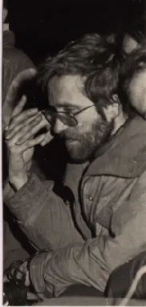

IN MEMORIAM Zoran Stipetić – Patak (1960. – 1996.)
SO PDS Velebit bez Patka neće biti isti, ali je njegovom zaslugom postao drugačiji nego li ga pamte brojne generacije koje su u njemu prošle svoja mladenačka iskustva, veselja i radosti.

Tekst je izvorno objavljen u Velebitenu br. 21, 1996. 16.3.2016. navršava se 22 godine od kako nas je napustio Zoran Stipetić – Patak. Njegov odlazak iz naše sredine označio je još jedan tužan, bolan rastanak, gubitak ne samo prijatelja, već aktivnog, vrijednog člana našeg odsjeka i društva.
Zoran Stipetić – Patak započeo je život l. 8. 1960. u Zagrebu. Kao brucoš elektrotehnike upisao se u velebitašku planinarsku školu 1979. nakon čega započinje njegovo aktivno članstvo. Velikom snagom duha nadvladao je opasnu bolest i s još većom životnom radošću nastavio život velebitaša.
Otkrićem Špilje u kamenolomu Tounj stalno je učestvovao i vodio ekipe u istraživanje špilje koja je ubrzo postala treća špilja po dužini u Hrvatskoj. Uvidjevši mukotrpnost posla kabinetske obrade podataka, dobivenih topografskim snimanjem, načinio je računarski program za crtanje špilja i jama koji je tijekom niza godina usavršavao i koristio pri obradi svih većih objekata koje su hrvatski speleolozi pronašli i istražili nakon toga vremena.
Učestvovao je i u višegodišnjim velbitaškim speleološkim istraživanjima Like koje kulminira pronalaskom Punara u Luci. Potopljeni nastavci špilja i jama – sifoni potakli su ga da završi tečaj ronjenja 1989. godine u okviru Društva za podvodne sportove u Zagrebu. Tada počinje njegova ljubav za ronjenje u špiljama. Ronio je tako u Zvonkovom bunaru na Dugom otoku, više puta u tounjskim špiljama, Ljubačkom vrelu kod Zadra i izvorskim špiljama Suvaje i Rudnice. Sifon Punara u Luci, ronjen 1990. godine bio je preronjeni sifon na najvećoj dubini u speleološkim objektima Hrvatske. Iste godine je sudjelovao u Cousteaouovoj ekipi koja je roneći po špiljama tragala za prvim nalaskom staništa čovječje ribice u dunavskom slivu. Tada je pronađen dugi suhi nastavak Obajdinove špilje iza sifona.
[caption id="attachment_1853" align="aligncenter" width="679"] Ravni Dabar - Davor Perić, Darko Bakšić i Zoran Stipetić Patak[/caption]Ronjenje i speleološku aktivnost prekinuo je tada rat i Zoran se dragovoljno uključio sa ostalim prijateljima planinarima alpininstima speleolozima u obrani domovine braneći je na njezinom najtežem, a nama najdražem i najljepšem dijelu – u velebitskim vrletima.
Po povratku s bojišnice vratio se na redovni posao u RIZ i mnogobrojnim velebitaškim aktivnostima. Nastavio je tako sa razvijanjem programa i unošenjem podataka o ranijim i tekućim istraživanjima u računalo. Preuzeo je grafičko uređivanje i prevođenje na Engleski društveno glasilo “Velebiten”, a zadnji, 20. broj, dogotovio je nekoliko dana prije smrti.
[caption id="attachment_1854" align="aligncenter" width="1024"] Zoran Stipetić - Patak, Punar u Luci[/caption]Kao jedan od najaktivnijih speleologa 1993. i 1994. je izabran za pročelnika speleološkog odsjeka. Naročitu ljubav i pažnju posvećivao je izgradnji mladih naraštaja. Od svojih početaka jedan je od najstalnijih instruktora na tradicionalnoj velebitaškoj zagrebačkoj školi koju je i vodio 1991. godine. Tijekom dugogodišnjeg speleološkog rada obišao je mnoge planine, zabite krajeve lijepe naše i spustio se u mnoge jame kao što su: Munižaba -448 m, Fantomska jama -477 m, Jama kod Rašpora -361 m, Podgračište II -329 m i Punar u Luci –290 m.
Pripremao je i organizirao speleološka orjentacijska natjecanja i sudjelovao na seminarima o samospašavanjima iz špilja i jama.
[caption id="attachment_1855" align="alignleft" width="425"] Patak, Lukina jama 1993.[/caption]U jami nad jamama – Lukinoj jami bio je 3 puta i to 2 puta do dna. Godine 1994. zajedno sa Teom Barišićem, zaronio je u sifon na njezinom dnu i tako postavio i svjetski rekord – ronjenje na najvećoj dubini od ulaza na svijetu. Za taj poduhvat pohvaljen je i od strane Hrvatskog planinarskog saveza. Želja da se prodre dalje u dubinu Lukine jame rezultirala je nabavkom nove opreme i pripremama u sklopu kojih je bila i ta kobna, 16. ožujka, na Malom Lošinju.
Iako mu je speleologija davno prestala biti hobijem i postala načinom života Zoran se nije bavio samo speleologijom, računalima i ronjenjem. Volio je i obične odlaske u planine, planinarske i skijaške ture, skijaško trčanje, biciklističke izlete, a nisu mu strani bili ni alpinizam, padobranske letenje, rafting ni jedrenje.
[caption id="attachment_1851" align="alignleft" width="415"] Zoran Stipetić - Patak[/caption]S velebitašima je odlazio u kina, posjećivao kazališta, video i dia-projekcije, bazene i koncerte. U svom malom podstanarskom stanu na Peščenici, koji je postao drugi dom “Velebitovih” špiljara, među prijateljima je širio svoju strast za dobrom knjigom, ambijentalnom muzikom, gurmanskim finotama i umjetnošču. Više od njegove aktivnosti pamtit ćemo njegovu savjesnost, plemenitost, nesebičnost i neobičan smisao za humor kojim je začinjavao sve naše napore i tulume zauvjek usađene u velebitaški duh i špiljarski folklor.
SO PDS Velebit bez Patka neće biti isti, ali je njegovom zaslugom postao drugačiji nego li ga pamte brojne generacije koje su u njemu prošle svoja mladenačka iskustva, veselja i radosti. Zoranu u spomen, velebitaši su jamu otkrivenu 1997. godine, duboku -553 metra, ujedno drugu najveću jamsku vertikalu na svijetu, nazvali Patkov gušt.
Njegov lik zauvijek čuvamo u našem sjećanju, u našim srcima, na svim prošlim i budućim akcijama, izletima i sastancima.